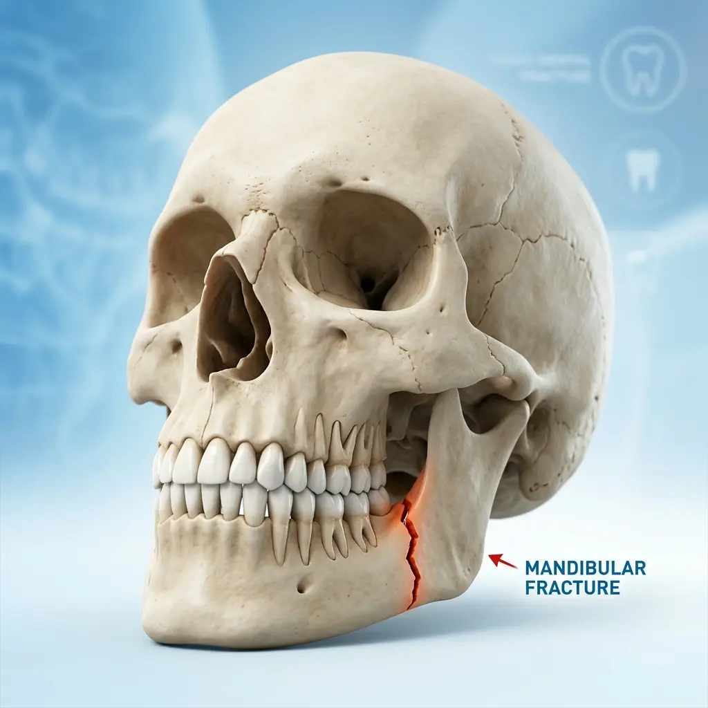
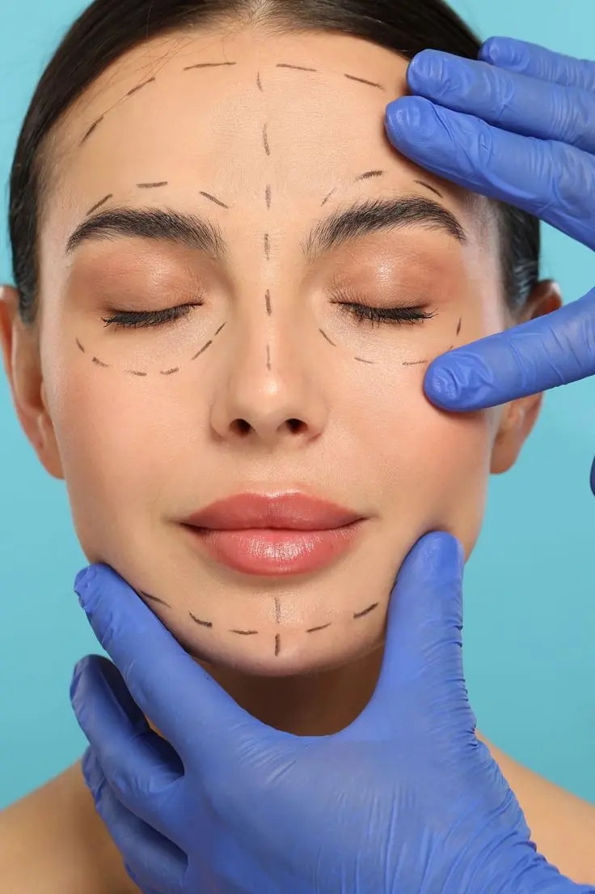
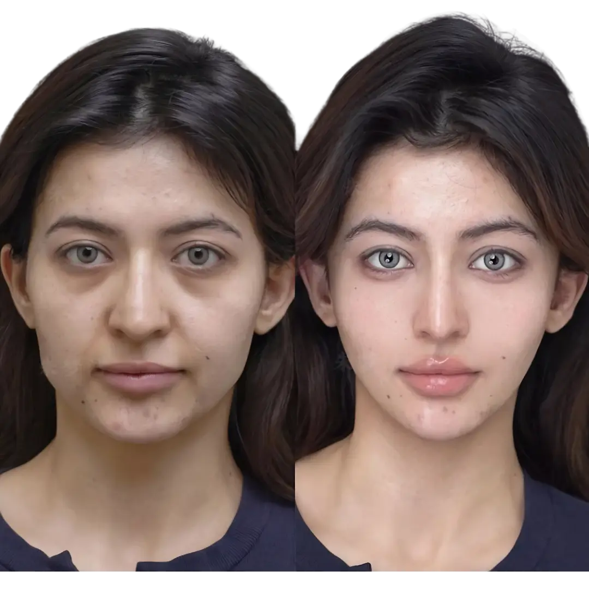

Precision surgical care for facial trauma, jaw injuries, and bone fractures in Hyderabad. Restoring your smile, function, and confidence with world-class medical expertise.
Facial trauma is a distressing experience that requires not only immediate medical intervention but also the highly specialized skills of a maxillofacial surgeon. Whether it's a sports injury, an accidental fall, or a more severe collision, the bones of the face—delicate yet essential for function and identity—can be compromised. At Vijaya Dental & Implant Center in Dammaiguda, Hyderabad, we specialize in the comprehensive management of facial fractures, ensuring that patients receive world-class care that prioritizes both physiological recovery and aesthetic preservation.
A facial fracture is a break in one or more of the bones of the face. Unlike fractures in the arms or legs, facial fractures carry the added complexity of involving vital structures such as the eyes, nose, mouth, and nerves. These injuries can affect your ability to speak, breathe, eat, and see correctly. This is why "proper positioning" and "anatomical reduction" are the cornerstones of our treatment philosophy.
The human face is composed of several key bones: the mandible (lower jaw), the maxilla (upper jaw), the zygoma (cheekbones), the nasal bones, and the orbital bones (eye sockets). A fracture in any of these areas requires a tailored approach that understands the unique biomechanics of the facial skeleton.

Advanced 3D imaging allows our specialists to map every millimeter of a fracture for precise surgical planning.
Our maxillofacial team at Vijaya Dental handles a wide spectrum of traumatic injuries. Understanding the specific type of fracture is the first step toward a successful recovery.
The mandible is the most common site of facial fractures due to its prominent position. Symptoms often include a "crooked" bite, difficulty opening the mouth, and numbness in the lower lip. Treatment often involves Open Reduction and Internal Fixation (ORIF), where titanium plates are used to hold the bone in place while it heals.
A blow to the side of the face can cause the cheekbone to fracture, often leading to a flattened appearance of the cheek and potential interference with the movement of the eye. Precision in zygomatic treatment is essential to restore the natural symmetry of the face.

These are often classified as Le Fort fractures (Type I, II, or III). They involve the upper jaw and can extend into the nasal and orbital regions. These are complex injuries that require careful management of the bite (occlusion) and the midface structure.
Also known as "blowout" fractures, these occur when the thin bones supporting the eye are broken. If not treated correctly, the eye can sink inward (enophthalmos) or downward, leading to double vision (diplopia). Our surgeons work with microsurgical precision to restore the orbital floor.
Time is of the essence in facial trauma care. Delaying treatment can lead to bones beginning to heal in incorrect positions (malunion), which can cause permanent functional deficits and cosmetic deformities. Seeking care at a specialized center like Vijaya Dental ensures that you are evaluated by experts who deal with these complexities daily.
In Dammaiguda and the surrounding Secunderabad areas, our facility is recognized for its rapid response and advanced diagnostic capabilities. We understand that facial trauma isn't just a physical injury—it's an emotional one. Our team provides compassionate care from the moment you walk through our doors.
Effective treatment begins with an accurate diagnosis. Gone are the days of relying solely on standard 2D X-rays. At our center, we utilize 3D CBCT (Cone Beam Computed Tomography) and high-resolution imaging to create a three-dimensional model of the patient's facial skeleton.
Not every facial fracture requires a trip to the operating room. At Vijaya Dental, we believe in the most conservative approach that will yield the best result. Minor, non-displaced fractures can often be managed with a soft diet, pain management, and close monitoring.
However, when bones are displaced, surgery becomes necessary. Our surgeons utilize the latest in Rigid Internal Fixation. This involves the use of biocompatible titanium plates and screws that act as an "internal splint." The advantage of this technology is that it often allows patients to avoid having their jaws wired shut (MMF), allowing for better nutrition and comfort during recovery.

Patient education is key. We ensure you understand every step of your recovery journey.
The field of maxillofacial surgery has seen incredible advancements in the last decade. At Vijaya Dental, we stay at the forefront of these developments. We use microsurgical techniques to minimize incisions, often placing them inside the mouth or along natural skin creases to ensure that scars are invisible once healed.
The use of high-grade titanium has revolutionized bone healing. Titanium is not only incredibly strong but also exceptionally well-tolerated by the human body. Once placed, these plates usually remain for life without causing any issues, providing a permanent foundation for your facial structure.
Surgery is only one part of the journey. The rehabilitation phase is where function is fully restored. This involves physiotherapy for the jaw muscles, careful monitoring of the dental bite, and ensuring that any nerve injuries are healing correctly. Our team provides a detailed post-operative guide tailored to your specific injury.
Patients are typically placed on a graduated diet, starting with liquids and moving to soft foods as the bone gains strength. Regular follow-up appointments at our Dammaiguda clinic ensure that your recovery is on the right track.
Facial fractures often involve the teeth and their supporting structures. As a comprehensive dental and implant center, we are uniquely positioned to manage both the bone fracture and any associated dental trauma. Whether it involves splinting loose teeth, performing emergency root canals, or planning for future dental implants to replace lost teeth, we provide a "one-stop" solution for oral-maxillofacial health.
When it comes to your face, you should never settle for anything less than excellence. A maxillofacial surgeon undergoes years of specialized training beyond general dentistry and medicine. Dr. Praveen R and the surgical team at Vijaya Dental bring years of experience in handling complex trauma cases with a record of success and patient satisfaction.
Why choose us for your facial fracture treatment? It's our combination of technology, expertise, and empathy. We offer affordable pricing without compromising on the quality of materials or care. Our clinic is designed to be a safe, hygienic, and welcoming environment for patients in their time of need.
Apply ice to reduce swelling and seek immediate medical attention. Do not attempt to move or "reset" any bones yourself. If there is bleeding in the mouth, gently rinse with water and use clean gauze to apply pressure.
With modern internal fixation (titanium plates), the need to wire jaws shut (Intermaxillary Fixation) has significantly decreased. Most of our patients can move their jaws and speak immediately after surgery.
A soft diet is usually required for 4 to 6 weeks. After the 6-week mark, as the bone solidifies, you can gradually reintroduce harder foods under your surgeon's guidance.
Yes, titanium plates are designed to be permanent and do not need to be removed unless they cause irritation or if an infection occurs, which is rare.
It is generally recommended to wait at least 1 to 2 weeks before flying, especially if you have had an orbital or sinus-related fracture, due to pressure changes. Always consult your surgeon first.
Most health insurance plans cover trauma-related surgeries. Our administrative team can assist you with the necessary documentation for your claims.
Yes. Children's facial bones are still growing, and their teeth are in different stages of development. We use specialized pediatric maxillofacial techniques to ensure their growth is not hindered.
You can call our emergency line at 91776 17437 or walk into our clinic in Dammaiguda. We prioritize trauma cases to ensure immediate evaluation.
Don't wait when it comes to facial trauma. Expert care is just a phone call away. Trust the specialists at Vijaya Dental.
📅 Book Your Appointment 📞 Call 91776 17437"I’m Dixit Reddy, and I recently visited Vijaya Dental & Implant Center with my mom for her Root Canal Treatment. Honestly, we had a really good experience. My mom was quite nervous, but the doctor explained everything clearly. The procedure was smooth and almost painless. Thank you, Dr. Praveen sir!"
"Visited Vijaya Dental & Implant Center for teeth cleaning and consultation. The doctor is very knowledgeable and explains everything in detail. The clinic is well-maintained and uses modern technology. I felt very comfortable throughout the treatment. Highly recommend!"
"I’m Vanadana, and I visited Vijaya Dental & Implant Center for braces to improve my smile. Dr. Praveen sir explained everything clearly and made me feel comfortable. The treatment process was smooth, the clinic is clean, and the staff are very friendly. Highly recommended 👍"
"Excellent experience at Vijaya Dental! I went for a wisdom tooth consultation and the doctor was very patient in explaining the process. The treatment was painless and the costs were very reasonable. Definitely the best dentist in Dammaiguda!"
Beside RR hospital,
P S Rao Nagar, Dammaiguda,
Hyderabad, Telangana 500083
Plus Code: GH2R+3V Secunderabad
Monday – Sunday
10:00 AM – 10:00 PM
Telugu · Hindi · English